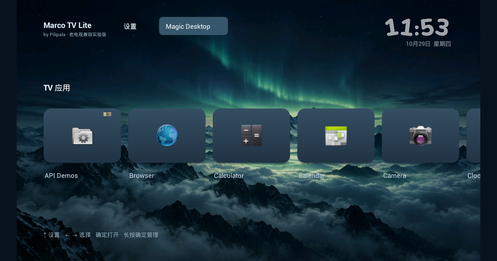
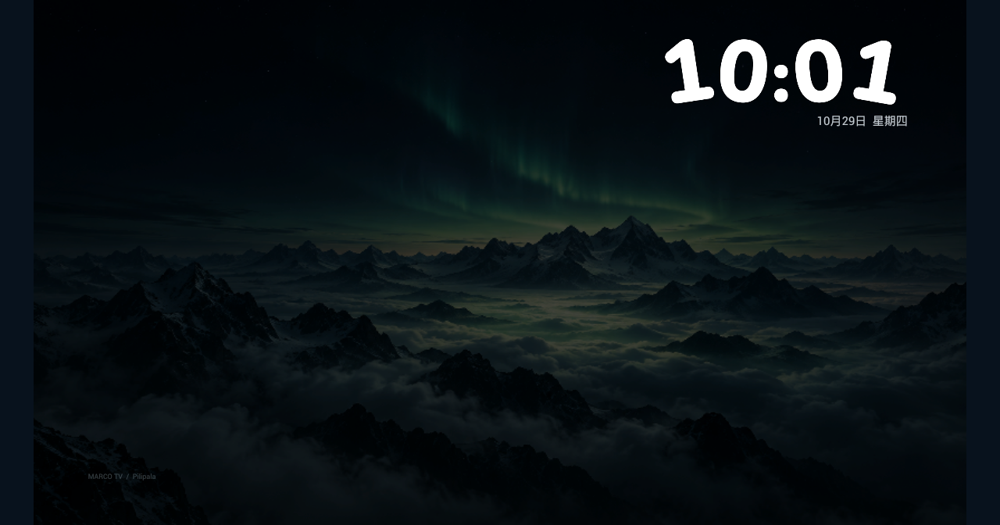
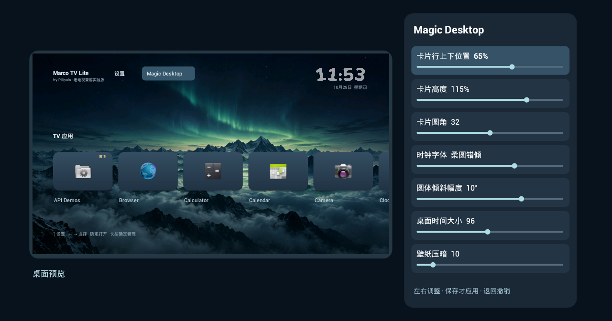
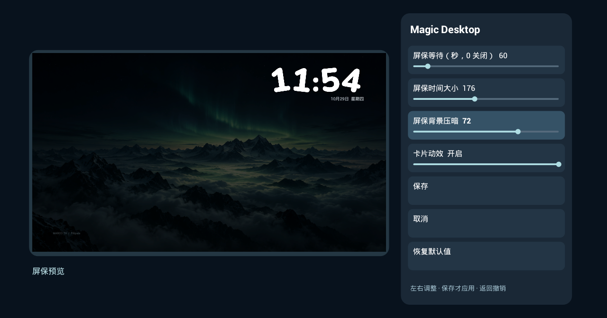

下载
点击下载将跳转至夸克网盘。
Marco TV Lite 0.1.2
目标最低 Android 4.0。已通过 Android 4.0.2 模拟器基础验证，尚无老电视真机验证。更多机型等待实测反馈，欢迎加入测试！
校验值 SHA-256
ea06ef9ca03cfd792ec3be37f85e5d4a356f3120cc7a63ea19e7cde98837d576
下载后对一下这串字符，不一样就重新下载，不要装。
腾讯频道
腾讯频道「Marco交流区」，新版发布、源更新和反馈都在这里。点开加入频道。
捐赠支持
Marco TV Lite 完全免费开源，捐赠全凭自愿，不影响任何功能。感谢你的支持。


轻量版，保留这些日常体验
卡片桌面
左右选择、确定打开；长按管理置顶和隐藏。支持最近打开或名称排序，向右移动时整行跟随滚动。
Magic Desktop
桌面／屏保平面缩小预览，11 项调整。卡片位置、高度、圆角和时钟外观可调，保存才生效，返回撤销。
四款时钟
现代宽体、修长窄体、柔圆错倾、雅致衬线。圆体倾斜幅度可调，桌面闲置后放大时间、压暗壁纸。
简单维护
两张内置壁纸、本机外观快照和设备状态页。无联网权限，不上传使用数据。

桌面首页

息屏时钟
本页截图为 Android 4.0.2 模拟器中实际界面绘制导出；不是电视实拍或流畅度证明。卡片为系统示例应用。
更新说明
恢复更可靠，切换不丢草稿。
- 修复恢复写入失败仍提示成功；失败会明确报告未完成。
- 暂停恢复保留页面与草稿，Home、取消和返回仍可撤销；增加页面状态保存恢复。
- 已有时钟随当前时区更新，时间或时区变化时重新安排刷新。
- 逐级返回恢复原选中项，Magic Desktop 按进入来源返回。
- 屏保大小与压暗有实际预览，动效开关即时演示。
- 返回桌面复用应用图标，增加手动刷新；静止界面不再每秒整页重绘。
- 卡片名称常显，增加轻渐变、阴影与清晰焦点框。
- 四款字体保留，壁纸优化后 APK 从约 4.1 MiB 降到约 301 KiB，体积缩小约 93%。
Lite 0.1.0／0.1.1 用户可直接覆盖升级。缩包与模拟器检查不代表所有老电视的性能已经验证。
先试用，再决定是否设为桌面
- 在电视「关于／系统信息」核对实际 Android 版本。不能安装 Android APK 的系统不适用。
- 下载上方带 Lite 的 APK。通过电视浏览器、厂商文件接收、U 盘或已经授权的电脑 ADB 传到电视。
- 按系统提示，允许实际打开安装包的文件管理器或浏览器安装未知来源应用，然后安装。
- 从原厂应用列表打开 Marco TV Lite，检查方向键、确定、返回和应用启动。
- 确认基本操作正常后，如果系统提供默认桌面选择，再选择 Lite。不要停用或卸载原厂桌面。
镜像站现有安装助手内置的是完整版，不会自动安装 Lite。Android 4.x 请直接使用本页 Lite APK；是否允许浏览器下载、文件接收或默认桌面选择，由电视固件决定。
遥控器怎么操作
左右选择卡片，确定打开；上键进入顶部设置与 Magic Desktop，下键回到卡片。长按确定打开单应用菜单。Magic Desktop 中上下选项目、左右调数值，滚动到底部选择保存、取消或恢复默认值；恢复默认值也需要再保存。
第一次按键从桌面时钟屏保唤醒，避免误开应用。Lite 的屏保只在桌面前台生效，不接管电视系统屏保。
从设置进入 Magic Desktop，返回会回到设置原项；从首页进入则返回首页。屏保参数会切换到屏保预览，选择动效项会演示一次卡片移动。设置列表底部可手动刷新应用。

Android 4.0.2 模拟器中实际界面绘制导出；不是电视实拍或流畅度证明。卡片为系统示例应用。

Android 4.0.2 模拟器界面绘制，屏保大小与背景压暗可即时预览。
更新、备份与恢复
Lite 本版没有在线更新，更新时手动覆盖安装 Lite APK。临时切到其他界面会保留原页面和草稿；Home、返回或取消按正常路径撤销草稿。存储写入失败时会报告未完成，请检查空间后重试。它不接入完整版的稳定／体验更新渠道，设置和备份也不互通。
「保存本机外观备份」只保留外观参数与内置壁纸选择，不包含应用排序记录，也不能迁移到其他电视。卸载 Lite 会删除设置和内部备份。需要恢复原厂桌面时，在系统设置改回默认桌面，或卸载 Lite。
验证到了哪里
20 项本地检查 + 42 项基础运行检查 + 10 项稳定性检查通过，运行环境为 Android 4.0.2 模拟器。覆盖安装运行、应用发现和打开、方向键、四款字体绘制、预览保存与撤销、本机外观恢复和异常备份保护；新增返回焦点、按键分发长按、缓存复用和静止重绘检查。
厂商 Home 键、真实遥控器长按／双击、关屏唤醒、长时间运行及实际流畅度仍待真机验证。页面状态 Bundle 恢复检查不能代替完整进程死亡验证。Android 4.0.3/4.0.4、4.1–5.x 和其他架构未逐项运行验证。
Lite 本版暂不提供 Marco 互联、系统最近任务、媒体播放卡片、ADB 自动恢复和开机接管。完整版继续面向 Android 6.0 及以上；查看完整版功能与下载。
反馈请附电视品牌型号、Android 与固件版本、软件版本、具体操作和结果。截图请遮挡账号、Wi-Fi 名称、IP、序列号和私人应用。
官方交流群
通用群，不分软件，Marco TV 和 Marco Movie 都可以在这里交流。点开会跳到 QQ 加群。